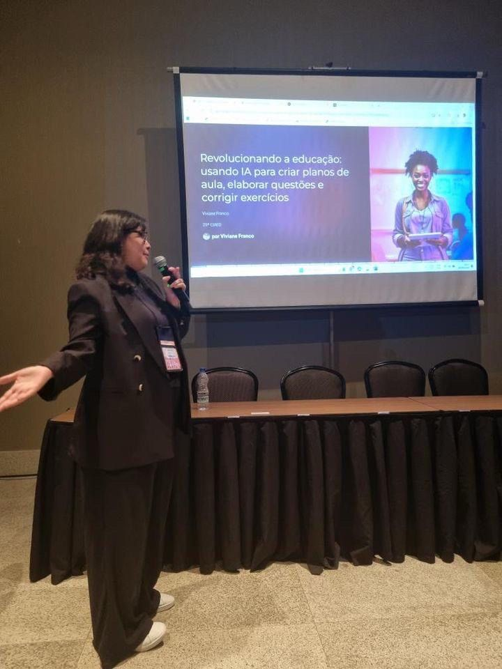
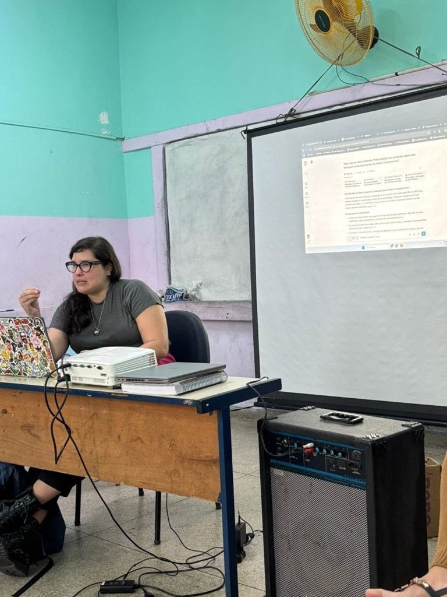
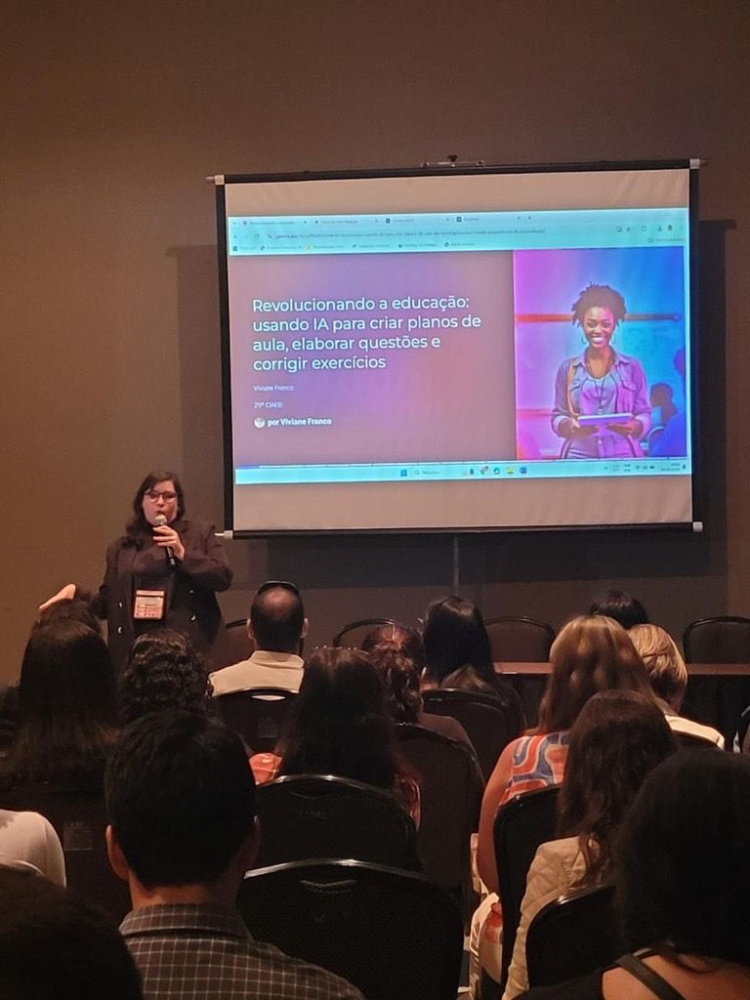
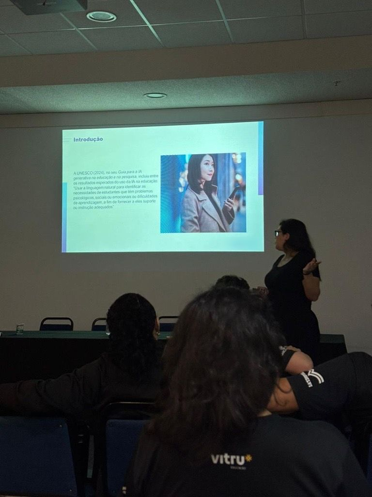
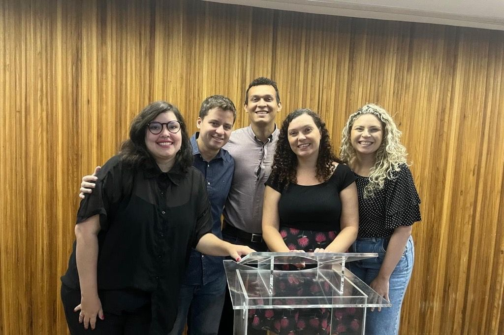

Consultoria e formação em IA na educação
Ajudo quem ensina a usar IA no improviso com método, segurança e resultado.
Formações, consultoria e ferramentas sob medida para equipes de T&D, órgãos públicos e redes de ensino. Sou designer instrucional desde 2019, uso IA todos os dias na produção de cursos e pesquiso o tema no mestrado em Informática da UNIRIO.

Formações, palestras e projetos recentes
- TRT da 4ª RegiãoOficina de IA e metodologias ativas para servidores que atuam na docência corporativa
- Professores de Santana de Parnaíba (SP)Formação em IA generativa para o planejamento e a criação de atividades
- Escola Municipal Joaquim Peçanha (RJ)Formação de professores na Baixada Fluminense
- 21º CIAED (ABED)Palestra sobre IA para criar planos de aula, elaborar questões e corrigir exercícios
- Uma grande escola de negóciosFerramentas de IA para a produção de cursos de educação executiva
- Hackathon de inovaçãoEquipe vencedora, com uma plataforma que automatiza a criação de medalhas digitais
Para quem eu trabalho
O ponto de partida é sempre o mesmo: pessoas que ensinam e querem usar IA no próprio trabalho, sem perder a qualidade pedagógica. O que muda é o contexto.
Empresas e equipes de T&D
Para quem produz treinamentos e quer ganhar tempo sem perder qualidade.
- Letramento em IA para a equipe de aprendizagem
- IA na produção de conteúdo e de avaliações
- Trilhas e metodologias ativas com apoio de IA
Setor público e escolas de governo
Para tribunais, escolas judiciais e de governo que precisam capacitar servidores com responsabilidade.
- Oficinas de IA generativa para servidores e instrutores
- Uso seguro e ético, com atenção à LGPD
- Materiais abertos e reaproveitáveis pela instituição
Escolas e redes de ensino
Para professores que querem usar IA para planejar, avaliar e personalizar o ensino.
- Formação de professores com demonstrações ao vivo
- Planos de aula, questões e correção com IA
- Orientações para o uso responsável com estudantes
Três formas de trabalharmos juntos
Cada proposta é montada a partir de um diagnóstico do público: o que as pessoas já sabem, o que precisam fazer e quais ferramentas a instituição já usa.
Formações e capacitações
Letramento em IA para equipes, professores e servidores, com a ferramenta que a organização já usa: Copilot, ChatGPT, Claude ou Gemini. Boa parte do tempo é prática, com situações reais do trabalho de quem participa.
Oficinas, cursos com carga horária definida e palestras, presenciais ou on-line.
Consultoria em design instrucional e T&D
Apoio para integrar a IA à produção de cursos, do planejamento à revisão do material: mapeamento do processo, escolha de ferramentas, prompts e fluxos de trabalho, e diretrizes de uso responsável para a equipe.
Diagnóstico, plano de implantação e acompanhamento.
Ferramentas sob medida
Revisores de texto, geradores de questões, conversores de transcrições em apostilas e simuladores de casos, desenvolvidos para o processo da sua equipe e sempre com revisão humana no fluxo.
Protótipo, testes com a equipe e entrega documentada.
Resultados na produção de cursos
Em uma grande escola de negócios, criei ferramentas de IA que mudaram o ritmo da produção de cursos de educação executiva.
Apostilas a partir de videoaulas
40 dias 1 diaTranscrições de videoaulas viram apostilas estruturadas, prontas para revisão.
Ver o caseRevisão de textos longos
3 dias 10 minRevisão gramatical e de estilo de apostilas com mais de 100 páginas, sem perder a formatação.
Ver o caseQuestões de avaliação
10 dias 30 minQuestões de múltipla escolha alinhadas às rubricas da instituição, com gabarito e justificativa.
Ver o caseProjeto autoral em desenvolvimento: o CaseLab, em que a IA monta trilhas de aprendizagem a partir de um problema real da equipe. E o material aberto da oficina para o TRT da 4ª Região.
Em sala, no palco e com a equipe




Veja também o vídeo da formação com professores de Santana de Parnaíba.
Como funciona
Conversa inicial
Entendo o contexto, o público e o que a instituição quer alcançar.
Diagnóstico e proposta
Levanto o que as pessoas já sabem e proponho formato, conteúdo, carga horária e prazos.
Execução
Formação, consultoria ou ferramenta, com prática a partir de situações reais e material de apoio.
Avaliação
Ouço quem participou, meço o que mudou e indico os próximos passos.
Da sala de aula à IA aplicada à educação
Sou formada em Letras pela UERJ, fui professora por muitos anos e, desde 2019, trabalho como designer instrucional em cursos de educação executiva. Fui uma das primeiras a levar a IA para a produção desses cursos: desenhei processos, usos e ferramentas, incluindo automações com Python e APIs de IA.
Levo para as formações a experiência de quem usa IA todos os dias para ensinar, com o cuidado de quem conhece a linguagem e o processo de aprendizagem.
- Antes de 2019Professora em instituições como Eleva Educação, UERJ (Licom e Unati), Yázigi e Wizard
- 2019 – hojeDesigner instrucional em educação executiva, com foco em IA na produção de cursos
- FormaçãoLetras (licenciatura e bacharelado) pela UERJ e especialização em Liderança e Inovação
- 2026Mestrado em Informática na UNIRIO, pesquisando IA no design instrucional, e consultoria em IA na educação
Vamos conversar sobre a sua equipe?
Conte em poucas linhas quem é o público e o que você precisa. Eu respondo com perguntas e uma primeira ideia de formato.
Ou escreva direto para vivianefrancodasilva@gmail.com